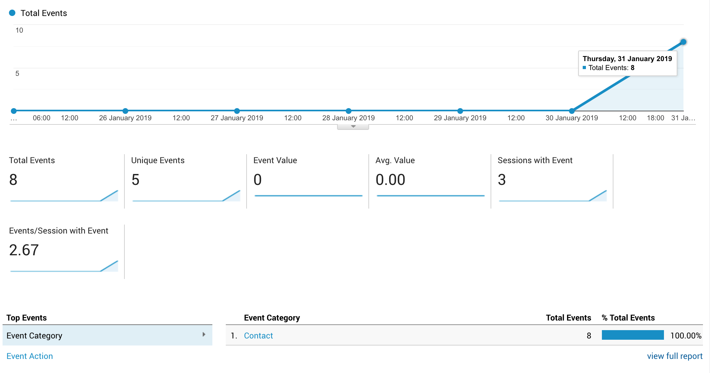
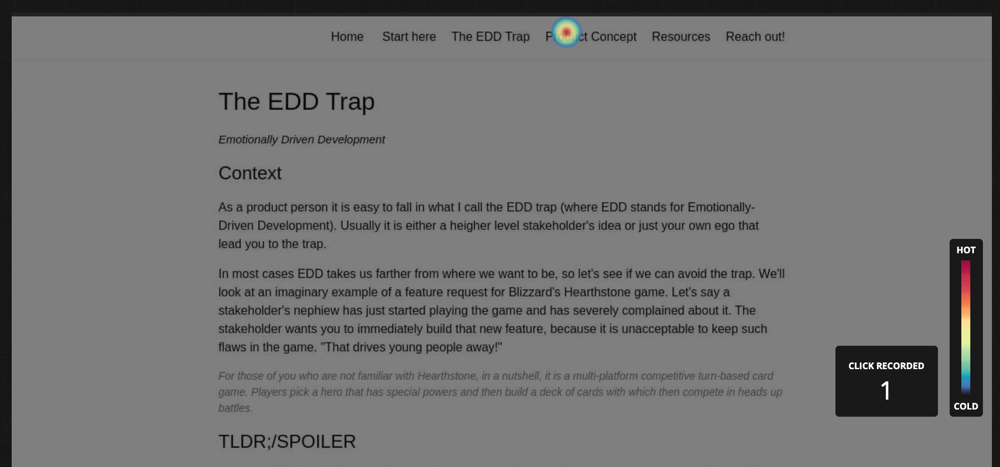
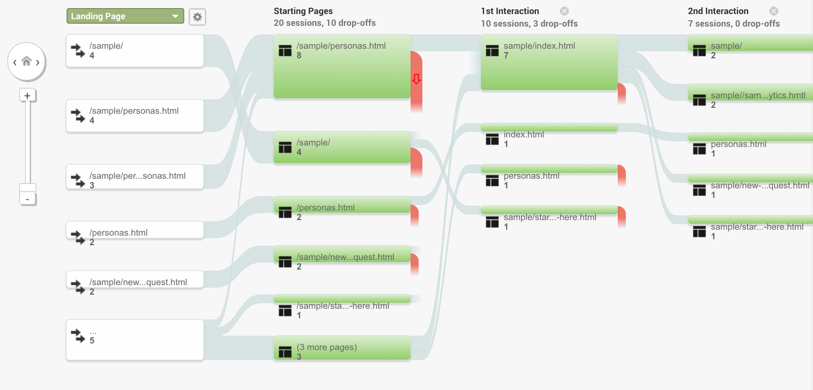
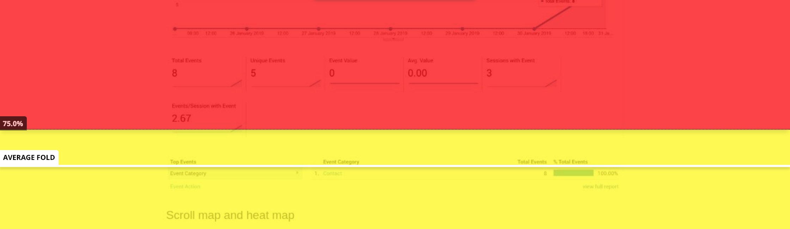
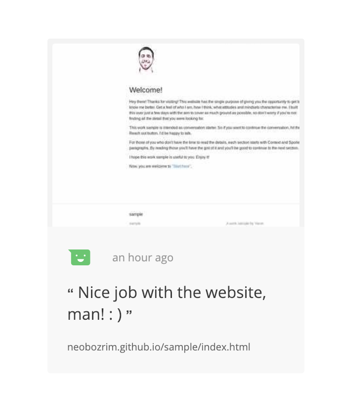

Understand
A product person needs to know how their product is being used.
While you're using this website there's a few tools working behind the scenes. Here's a brief overview.
Event monitoring - Reach out button clicks
There's a Tag manager tag that reports to me every time you hit "Reach out!" in the header. Since the purpose of this website is to have people reach out to me, I thought it makes sense to (at least) know how many times someone attempted to do so.
Hotspots
Hotjar's hotspots help me get an idea about where most people go (or try to go) from a given page. Hotspots are highlights of areas where people click:
User Flows
While hotspots are useful for optimizing the "micro" experience on a specific page of interest, Google Analytics User Flows tell the bigger picture about how people "flow" through the site and where they lose interest and... just leave you... Mind you that the screenshot is from the early days of this site.
Scroll maps
I rely on HotJar to tell me that, for example, only 25% of people scrolled down to the bottom of a given page. This helps me optimize content, so things that I find important are not being missed by the people who read a given page.
Feedback
Don't be shy and click on that Feedback button on the right. Pick an emoji and (only if you want) send me a line. Here's how I see those:
I hope I grabbed your attention... and some of your data. Now go ahead and find out what EDD means!
NEXT PAGE: The EDD Trap